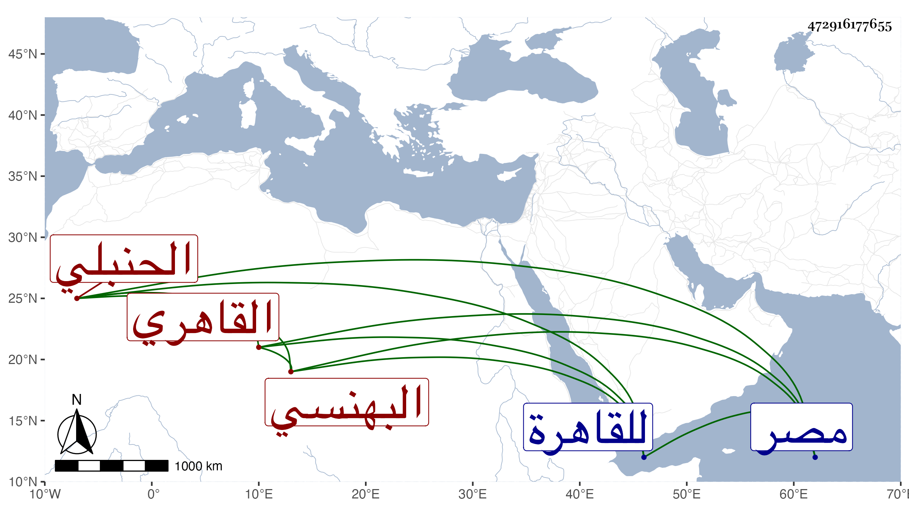

0902Sakhawi.DawLamic.ITO20230111-ara1.EIS1600.472916177655
Biography ID: 472916177655
598
أحمد بن محمد الشهاب البهنسي الأصل القاهري الحنبلي . ولد في سنة اثنتين وثلاثين وثمانمائة وحفظ القرآن والوجيز واستمر على حفظه وحضور دروس قاضيهم العز الكناني وكان ينتمي له بقرابة بحيث استنابه في القضاء قبيل موته وبرع في الشطرنج مع شدة بلادته وجموده . مات فجأة سقطت عليه سقيفة بمصر القديمة في ليلة الخميس تاسع المحرم سنة تسع وسبعين وحمل من الغد للقاهرة فصلي عليه ودفن بحوش البغاددة بالقربة من قاضيه وتأسفت عليه أمه عوضهما الله الجنة .
